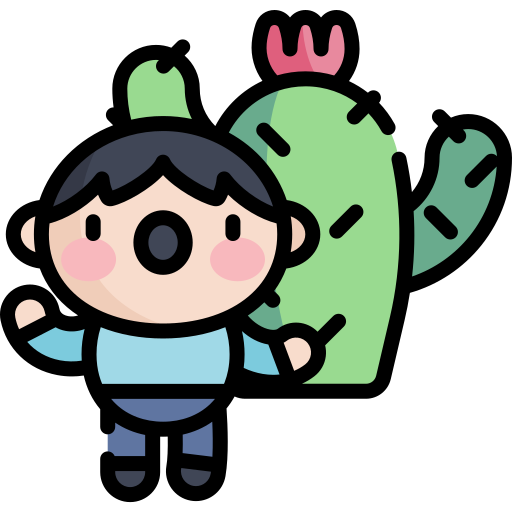

The Green Kingdom
Fantasy Contents
🌿✨Cactus and the Forbidden Truth
In the heart of the Green Kingdom, a land teeming with vibrant plants and animals, there lived only one family of Prickly Pear trees.
From this family came a bright, lively young girl named Cactus. Loved by many, she had a thirst for exploration and possessed magical leaves that could heal wounds with a single touch.
One radiant morning, Cactus was on her way to school like any other day.
Birds chirped, the wind danced through the trees, and the sun gently warmed the land. But suddenly, a faint voice called out:
“Help! Someone please, help me!”
Should she pretend she heard nothing and go to school, or follow the voice?
As she stood there, the voice cried again, more desperate this time:
“Is anyone out there? Please, help me!”
Hiding behind the leaves of her kindred trees, Cactus called out:
“Who’s there?”
A voice answered, weak and pained:
“Please… I’m hurt. I can’t move my leg.
I tripped while exploring this forest. I need to go home before my parents worry!”
Unable to ignore him, she rushed toward the sound—and what she saw left her stunned.
Lying on the forest floor was a human boy, his leg badly wounded.
“Can you help me?” he asked. “Please… I need your help.”
Cactus narrowed her eyes.
“Why should I help you? You humans only bring harm to us.”
The boy looked up, his voice trembling yet sincere:
“I don’t want to hurt anyone. I came here to fix what’s been broken… To end the hatred between our worlds.”
Cactus stared at him, her heart pounding.
“Really? And how can I trust you?”
The boy replied earnestly,
“Because I came here without a plan, without even telling my parents.
I don’t want to harm your kind. I want both our kingdoms to live in harmony again—like they once did. No more hatred. Just peace.”
Curiosity began to grow inside Cactus, slowly pushing away her fear.
“Fine… but first, let me heal your wound.”
She pulled one of her magical leaves from her side, gently placed it on the boy’s injured leg, and instantly, the wound began to vanish—as if it had never been there.
The boy’s eyes widened in disbelief.
“Wha—what just happened?! That’s impossible… Your leaves—they're magic! That’s…
incredible!”
Cactus smiled softly.
“Yes. My leaves can heal wounds.”
“Thank you,” he said, still amazed.
“What’s your name?”
“Cactus,” she replied.
“Thank you, Cactus. I don’t know how I’ll ever repay you. My name is Josh.
It’s truly an honor to meet you…”
But before he could finish, Cactus interrupted him:
“Josh, you need to go. Now! If anyone sees you here, it could be dangerous. Humans are forbidden from entering this kingdom.”
“Alright… I understand. I’ll go.”
Cactus continued her day, walking to school with a strange feeling in her heart. For the first time, she realized not all humans were cruel.
Josh had been kind… honest… and in pain.
At school, she tried to tell her friends what happened—but they just laughed it off, thinking it was another one of her wild stories. Disheartened, but not discouraged, Cactus kept the truth to herself. Every day after that,
she met Josh in secret—at the same spot—before school. Little by little, Josh revealed everything to her: the truth about the long-forgotten friendship… and the tragic betrayal that tore apart the bond between humans and the Green Kingdom.
🌿A Forgotten Past Two Years Ago
Once upon a time, humans and the Green Kingdom lived in peace. The lands were united, and the people—both human and nature-born—lived side by side. The rulers, Queen Jurhadina and King Reece, were more than allies—they were the closest of friends. But not everyone was happy with this unity. Queen Jurhadina's royal advisor, Dale, secretly despised King Reece and all of humankind.He quietly plotted to destroy the trust between the two kingdoms—and claim power for himself. Then came the day known as The Green Day, celebrated every year on November 20. It was a day to honor the union of the kingdoms and the prosperity they shared. Queen Jurhadina invited King Reece to the grand celebration that evening. The people danced, drums echoed, and fireworks painted the night sky with joy. But behind the scenes, Dale set his plan in motion.
🌌🔥 The Night of the Green Day
As the night of celebration reached its peak, Queen Jurhadina and King Reece stood together in the royal hall, smiling at the joyful crowd. It was almost time for the Queen to give her annual speech—a symbol of unity.
She turned to her advisor:
“Dale, bring me the golden scepter.”
The Golden Scepter was no ordinary artifact. It had been passed down through generations, a symbol of the Queen’s power and the kingdom’s legacy.
It was sacred… irreplaceable.
Dale nodded and vanished into the shadows.
Minutes passed.
Then suddenly, Dale came rushing back—sweating, panicked, breathless.
“Your Majesty… a crisis! The scepter… it's missing!”
Jurhadina gasped.
“What do you mean it's missing? That’s impossible!”
Before she could say more, a guard entered the room.
“Your Majesty… I’ve found the scepter.”
“Where?!”
she asked, her voice trembling.
“In King Reece’s carriage. Hidden beneath the rear compartment.”
The room fell silent.
Queen Jurhadina stared in disbelief.
“How could this be…?
Bring King Reece. Now.”
Moments later, King Reece entered, confused but calm.
“Jurhadina, what’s the matter?
The celebration has stopped…”
She held up the golden scepter with shaking hands.
“Why did you do it? I trusted you!
You were my friend… my closest ally! And you betrayed me on this day?!”
Reece was speechless.
“What are you talking about? I never touched your scepter! I would never—”
“It was found in your carriage!”
she interrupted, eyes brimming with tears. “Hidden, like a thief!”
“No—this is a setup! Someone planted it there! Jurhadina, please… don’t believe this. You know me!”
“Enough!”
she cried. “Our friendship ends tonight. So does the peace between our people.”
The king’s face turned pale.
And in the corner, watching it all unfold… stood Dale, smiling quietly.
His plan had worked.
That very night, the gates between the kingdoms were sealed.
No humans would ever be allowed into the Green Kingdom again.
🌿🔎 Back to the Present
When Cactus heard this story from her grandmother, her heart ached. “Dale… he was behind it all… He betrayed both kingdoms,” she whispered in disbelief. Josh nodded when she told him. “Now you see why I need your help, Cactus. We have to fix this.” “We need proof,” she said firmly. “If we can prove Dale set up the king… maybe Queen Jurhadina will listen.”Josh leaned in, intrigued. “How?” “My grandmother was there. She saw everything. She might remember something Dale did—some detail no one noticed back then.
We just have to ask the right questions.” Josh smiled. “Then let’s start there.” Cactus nodded with determination. “For the truth. For peace.” And so began their secret mission… To clear King Reece’s name. To expose Dale’s betrayal. To restore the long-lost peace between humans and the Green Kingdom.
🌌🔎 The Memory Clue
That night, as the stars blinked above the Green Kingdom, Cactus lay in bed, unable to sleep. Her grandmother's words echoed in her mind. "I still remember the look in Dale’s eyes that night... the way he disappeared before the scepter was reported missing... It didn’t feel right." Cactus whispered to herself: “There must be something… something we missed.” At dawn, she returned to the same secret
meeting spot. Josh was already there, pacing.
“Did she remember anything?” he asked eagerly.
“Yes,” Cactus said, “She mentioned that Dale left the Queen’s side minutes before the scepter was discovered missing.
And… she remembers seeing him with a silver pouch—something he never carried before.”
Josh’s eyes lit up.
“That could be it!
If we find that pouch—or prove it held the scepter before it was planted—we might just have our evidence!”
Cactus thought for a moment.
“But where would he hide something like that?”
Then it struck her.
“The Old Archives. No one goes there anymore. It’s hidden beneath the castle ruins.”
Josh smiled.
“Then what are we waiting for?”
🏰🌫The Forbidden Archives
Sneaking into the ruined part of the castle wasn’t easy. Guards patrolled the upper walls, and magical vines covered the entrance like nature’s lock.
But Cactus knew the forest better than anyone.
She guided Josh through secret tunnels made by tree roots and forgotten time.
Finally, they reached a crumbling wooden door carved with glowing runes.
“This is it,” she whispered.
They stepped into the darkness.
Dust swirled with each step.
The room was lined with ancient scrolls, broken shelves, and shattered glass. But in the far corner—beneath a loose stone—they found it.
A silver pouch. Faded. Torn. But still there.
Inside it…
were tiny golden threads—exactly like the ones woven into the Queen’s scepter. Josh’s voice trembled: “This proves Dale had the scepter before anyone else…” Cactus nodded. “Now we just have to get it to the Queen… without Dale finding out.”
⚠️🕵️A Race Against Time
What they didn’t know… was that Dale had been watching them. From the shadows of the ruins, his eyes glowed with fury. “So… the little cactus girl knows too much,”he muttered. “Time to end this.” That night, as Cactus returned home, she noticed something strange. Her window was open.
Her scrolls were scattered. Someone had been there.
She raced to the pouch—gone. “No!” she cried. Josh arrived just in time to see the panic in her eyes. “He took it. Dale knows we’re onto him.” Josh clenched his fists. “Then we go to the Queen. We tell her everything. Even without the pouch—your grandmother’s testimony, the timing, the motive. It’s enough to raise doubt.” Cactus hesitated. “But what if she doesn’t believe us?” Josh looked at her with confidence. “Then we make her believe.”
👑🌿 To Be Continued…
Will Queen Jurhadina listen? Can Cactus and Josh stop Dale before he buries the truth forever? And what other secrets lie within the heart of the Green Kingdom? The adventure has only just begun…💥👑The Voice of Truth
Cactus sat beside her grandmother as the fire crackled gently in the background. She listened closely,
her eyes wide with curiosity as her grandmother continued:
“My dear Cactus, that night... the night of the Green Day celebration... I was there, sitting near the Queen herself.
I remember everything like it was yesterday. The golden scepter was placed in its special glass case.
But suddenly, just before the Queen's speech, a panic broke out. Dell ran in, claiming the scepter had been stolen.”
Cactus leaned in. “And then?”
“The Queen was devastated. Dell accused King Reece,
saying the scepter was found in his carriage. I saw the confusion and heartbreak in his eyes.
He pleaded his innocence, but the Queen refused to listen. Her heart was broken. She truly believed he betrayed her.”
Cactus lowered her head. “But you don’t think he did it, do you?”
Her grandmother shook her head slowly. “No, child. I never believed that. And do you know what? I saw something that night… something I kept to myself out of fear.
I saw Dell sneaking out of the Queen’s chamber, right before the scepter disappeared.”
Cactus gasped. “You saw him?!”
“Yes. But I had no proof. No one would believe me against the word of the royal advisor.
And so, I stayed quiet… but I’ve regretted it every day since.”
Cactus jumped up, heart pounding with excitement. “This is it!
This is the truth we need! Grandma, would you tell this to the Queen?”
Her grandmother smiled warmly. “If it means healing the kingdom and ending the hatred… then yes, my dear. I will.”
The next morning, Cactus rushed to the forest and told Josh everything. His eyes lit up with hope. “This could change everything!”
Together, they planned their journey to the castle, not just to clear King Reece’ name, but to restore peace between the humans and the Green Kingdom.
It was time for the truth to be heard.
🤝🌿The Final Revelation
With her grandmother by her side and Josh walking beside her,
Cactus made her way to the royal palace of the Green Kingdom. The guards hesitated at first, but upon recognizing Cactus and hearing her grandmother’s name—a respected elder of the land—they were allowed entry.
The Queen sat on her emerald throne, dignified but still carrying the weight of sorrow in her eyes.
It had been years since the last time anyone had dared to speak of King Reece.
Cactus stepped forward, her heart racing.
“Your Majesty,” she began, “I know I am young, and I know the past has left many scars. But we have come not with judgment, only the truth.”
Queen Jurhadina raised her hand, signaling for silence in the court. “Go on,” she said calmly.
Then Cactus’ grandmother stepped forward and spoke,
her voice clear and strong.
“Your Majesty, on the night of the Green Day celebration... I saw Dell.
I saw him leaving your chamber moments before the scepter disappeared.
I kept silent all these years, afraid that no one would believe me. But the time for silence has passed.
You must know the truth. It was not King Reece. It was Dell who planted the scepter.”
Gasps echoed through the grand hall.
The Queen sat motionless, her eyes wide with shock. Her hand trembled as she brought it to her lips. “Dell…? No… I trusted him with everything…”
Suddenly, from the side of the room, a loud clatter echoed—the doors slammed open.
It was Dell.
His face was pale.
He had heard it all.
“You… You traitor!” the Queen cried out, standing tall. “All this time… you lied to me, you destroyed the friendship between kingdoms!”
Dell tried to speak, but the Queen raised her scepter—now restored—and pointed it toward him. “Guards! Arrest him!” With Dell taken away, the Queen turned to Cactus, Josh, and the wise grandmother. “Because of you,” she said softly, “a kingdom is healed. I owe you a debt that cannot be measured.” Then she looked toward Josh. “And what of the humans?” Josh stepped forward. “We want peace, Your Majesty. We always did. We were just waiting for someone brave enough to speak the truth.” Tears welled in the Queen’s eyes. “Then let this be the end of bitterness. From this day forward, may the Green Kingdom and the human lands stand together once more.” And just like that, the spell of misunderstanding was broken. The forests sang again, and the skies cleared. Peace bloomed like spring across the two worlds. And in the center of it all stood Cactus—once a little girl with magical leaves, now a hero of unity and truth.
🌿✨ The Ending: A New Beginning
After all that Cactus and Josh had been through, and once the truth came to light, the Green Kingdom was never the same again.
The rift between the two kingdoms began to heal. Humans and the people of Prickly Town exchanged gifts, knowledge, and even rare seeds of friendship.
Cactus became a symbol of courage—a vibrant plant girl with a pure heart and a brave voice that wasn’t afraid to speak up for what was right.
Josh became the first human to ever study in the Green Kingdom's schools. He sat beside Cactus, laughing and learning how to grow a better future together.
Every weekend, they would visit the Tree of Friendship, whose leaves seemed to grow faster than ever—almost as if it was saying thank you to Cactus… just like she had once healed others.
One day, Cactus wrote in her journal:
“When adventure feels scary... remember, the greatest stories begin with one choice: to follow your heart.”
Then she smiled and looked up at the sky.
And so… life bloomed again in the Green Kingdom.
Peace returned.
But their adventures?
They were only just beginning.